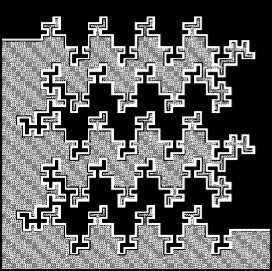
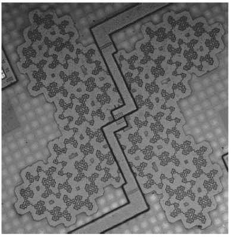

| Capacitors store energy, and are essential components of oscillating electronic circuits. If they can be made sufficiently efficient, they could store energy for other applications, perhaps as an alternative to batteries for electric cars. To be sure, we are not there yet, but fractals provide an approach for increasing capacitance. |
| Capacitance can be increased by a phenmenon called lateral fringing. The increase is proportional to the length of the boundary of the conductor. Because fractal curves can enclose a modest area with a very long boundary, these designs can give substantial capacitance increases, for instance, a factor of 6 over Euclidean designs. |
| This is one design for a fractal capacitor. |
|  |
| Here is a picture of a physical implementation of a fractal capacitor using five metal layers. |
|  |
| This work was done by Hirad Samavati, Ali Hajimiri, Arvin Shahani, Citty Nasserbakht, and Thomas Lee. |